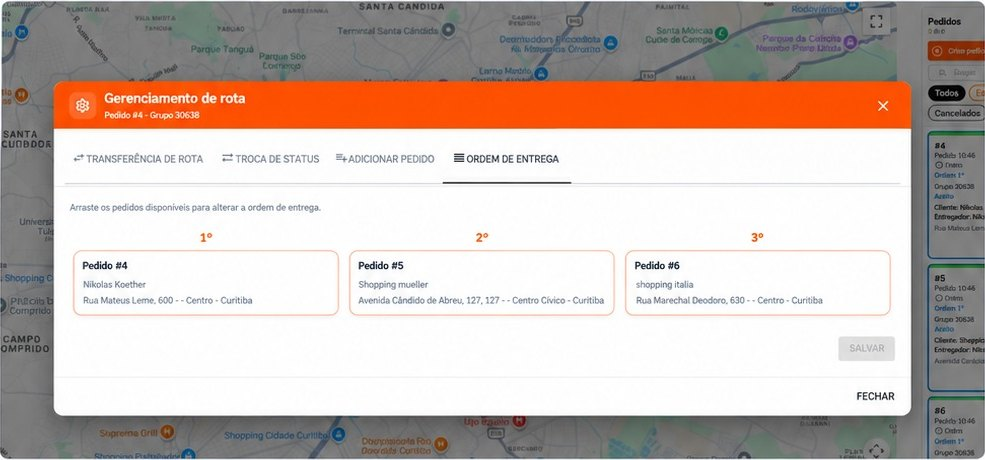
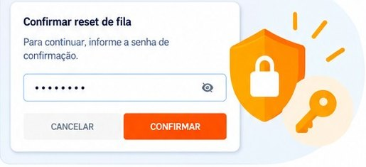
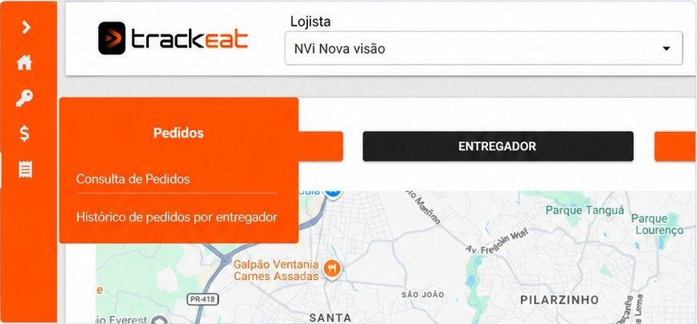
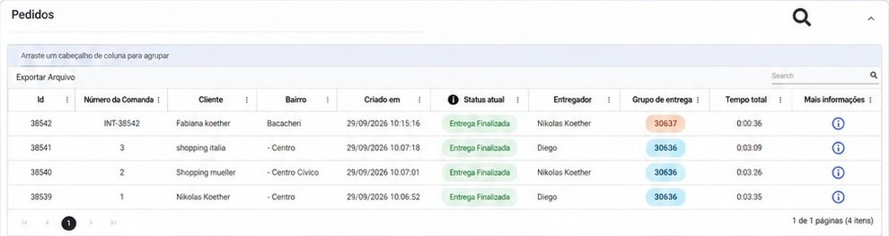
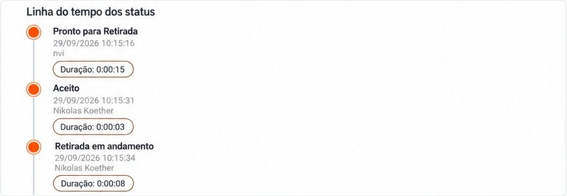
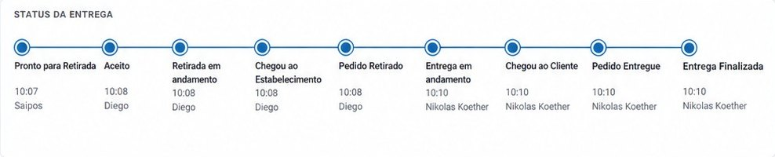
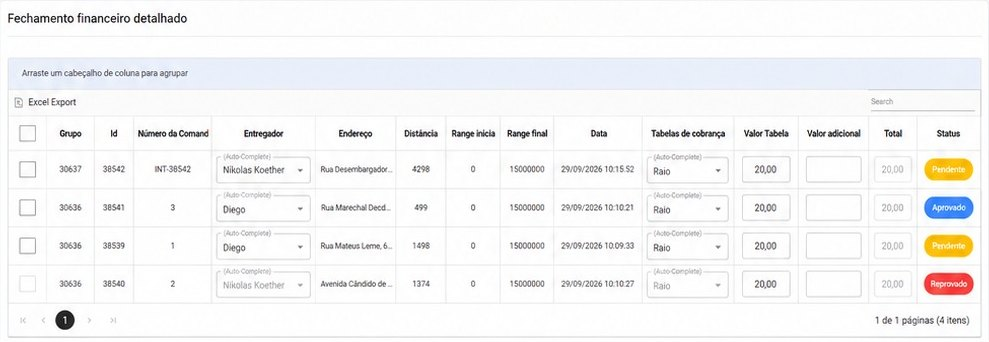

O sistema que recebe os pedidos do Saipos, monta as rotas e manda para o celular do motoboy. Aqui está o que cada um precisa saber para usar no dia a dia, em linguagem simples.
App do motoboy: versão 1.13Atualizado em 29/09/2026
Como usar este manual: não precisa ler tudo de uma vez. Procure no índice o que você vai fazer agora. Cada parte diz para quem ela serve:
Atendimento quem opera o painel no computador da loja (mapa, rotas, fila)
Gerente quem ajusta configurações, cadastra motoboy e confere o fechamento
É o sistema de entregas que substituiu o Foody. Ele faz três coisas:
Recebe os pedidos do Saipos. Quando o pedido fica pronto no Saipos, ele aparece no mapa do TrackEat.
Monta as rotas. Junta os pedidos que dá para levar juntos e escolhe a ordem de entrega.
Manda para o celular do motoboy e acompanha a entrega até o fim. Cada entrega finalizada vira um lançamento no fechamento do motoboy.
Existem dois tipos de pedido no mapa:
Pedido normal: vem do Saipos. O número é o mesmo da comanda.
Pedido interno: criado à mão dentro do TrackEat. O número começa com INT-. Veja Criar pedido manual.
Quem fez o sistema é a empresa NVi. O suporte deles atende no grupo de WhatsApp Suporte TrackEat Cidadão do Mundo.
2Como entrar no painel
Para: AtendimentoGerente
Abra no Chrome: projetonvi19.sgoas.nvi.com.br/UI/login
Entre com o login da sua loja. Cada loja tem o seu. Se você não tem, peça ao gerente.
No topo da tela, confira se o campo Lojista está na sua loja. Quem tem acesso a mais de uma loja troca por ali.
Senha não vai para grupo
Não mande login nem senha em grupo de WhatsApp, nem em print. Se o suporte precisar, o gerente passa no privado.
3A tela principal: mapa, pedidos e fila
Para: Atendimento
A tela inicial é um mapa. Nele aparecem os pedidos do dia e os motoboys. Cada rota tem uma cor.
Painel "Pedidos" (à direita): um cartão por pedido. O cartão mostra o número, a hora em que o pedido entrou, há quanto tempo ele está no sistema, o grupo (rota) em que está, o status, o cliente, o motoboy e o endereço.
Ícones do cartão: a engrenagem abre o gerenciamento da rota (item 6). "Ver no mapa" mostra onde o pedido está. Os ícones de copiar e de lixeira, só use com orientação do gerente.
"Sem agrupamento": o pedido ainda não entrou em nenhuma rota.
Filtros "Todos" e "Cancelados" no alto do painel de pedidos.
Quadro "Fila": a ordem dos motoboys que estão na loja esperando rota. O primeiro da fila recebe a próxima rota. Veja item 8.
Menu da esquerda (faixa laranja): leva às outras telas, como o menu Pedidos com as consultas (Parte 3) e o fechamento financeiro.
O mapa se atualiza sozinho a cada poucos segundos. Não precisa ficar apertando F5.
4O que quer dizer cada status
Para: AtendimentoGerenteMotoboy
Todo pedido anda por estas etapas, nesta ordem:
PendenteO pedido entrou, mas ainda não ficou pronto. Pedido interno (INT) nasce assim.
Pronto para retiradaA cozinha liberou no Saipos. A partir daqui o sistema pode colocar o pedido numa rota.
AceitoO motoboy aceitou a rota no app.
Retirada em andamentoO motoboy está vindo buscar.
Chegou ao estabelecimentoEle está na loja.
Pedido retiradoPegou o pedido na loja.
Entrega em andamentoSaiu para entregar.
Chegou ao clienteEstá perto do endereço do cliente.
Pedido entregueO motoboy tocou em "Entregue" no app.
Entrega finalizadaAcabou. A entrega entra no fechamento financeiro do motoboy.
O pedido só entra no TrackEat quando fica pronto
No Saipos, é o status Aguardando entrega que manda o pedido para o TrackEat como "Pronto para retirada". Se o pedido não for marcado assim no Saipos, ele não entra em rota.
Parte 2 · Rotas no dia a dia
5Modo automático: como ele monta a rota
Para: AtendimentoGerente
A regra é deixar no automático
Quanto menos mão na rota, melhor o sistema funciona. Muitos travamentos do app aconteceram depois de alguém mexer na rota à mão. Mexa só quando for preciso.
O que o sistema faz, passo a passo:
O pedido fica pronto no Saipos e aparece no mapa.
O sistema procura outros pedidos prontos que dá para levar junto: pedidos perto um do outro (pelas ruas, não em linha reta) e sem desvio grande.
Achou companheiro? Monta a rota na hora e manda. Ele não espera a rota encher até o máximo.
Não achou? Segura o pedido até o tempo máximo de espera, contado a partir de quando ele ficou pronto. Se ninguém aparecer, manda o pedido sozinho.
A rota vai para o primeiro motoboy da fila.
A ordem de entrega começa pelo pedido mais antigo ou pelo mais próximo da loja (depende da configuração da loja). Depois dele, o sistema segue o menor caminho.
"Por que ele mandou um pedido sozinho, se tinha outros prontos?"
Quase sempre é distância. Cada loja tem um limite de distância entre um endereço e o próximo. Se os outros pedidos prontos estão além desse limite, o sistema não junta. Aconteceu em 21/09: o pedido 1804 saiu sozinho porque os outros estavam a mais de 3 km dele pelas ruas.
Se parecer erro, mande no suporte o número do pedido e um print do mapa. A NVi reconstrói o que o sistema pensou e explica.
Ligar e desligar o automático
O botão fica no cabeçalho do painel Pedidos, ao lado do título. Com o automático desligado, ninguém monta rota sozinho: motoboy fica parado na loja esperando e o pedido mais antigo pode ficar para trás.
Desligar é exceção
Se precisar desligar, avise o gerente e o grupo do delivery com o motivo. E religue assim que passar.
6Mexer numa rota (a engrenagem)
Para: Atendimento
Clique na engrenagem do cartão do pedido. Abre a janela Gerenciamento de rota, com quatro abas:
Aba
Para que serve
Transferência de rota
Passar a rota inteira para outro motoboy. Use também quando uma rota ficou sem motoboy.
Troca de status
Mudar o status à mão. Exemplo: finalizar um pedido de teste, ou dar baixa numa entrega que o motoboy fez mas não conseguiu finalizar no app.
Adicionar pedido
Colocar mais um pedido numa rota que já existe.
Ordem de entrega
Novo (29/09). Arraste os cartões para mudar a ordem (1º, 2º, 3º) e clique em Salvar. Use depois de adicionar um pedido, que sempre entra por último.

Aba "Ordem de entrega": arraste os pedidos para a ordem certa e salve. (Exemplo da NVi, dados de teste.)
Depois de mexer, confira o celular do motoboy
Se ele não conseguir iniciar a rota depois que você adicionou um pedido, tire todos os pedidos da rota e mande de novo.
7Passar entregas para outro motoboy
Para: Atendimento
O jeito certo, segundo a NVi: desfaça o grupo e monte de novo manualmente com o outro motoboy. Ou use a aba Transferência de rota da engrenagem.
Não use o reset da fila para tirar entregas
O reset força o motoboy a largar os pedidos, fecha as entregas dele como se estivessem feitas e ele perde o lugar na fila. Em 22/09 três pedidos (1995, 1997 e 1998) apareceram como entregues sem terem sido, por causa de um reset. Reset é último caso. Veja o item 8.
Depois de trocar, confira no fechamento se a entrega ficou para quem entregou de verdade. Já aconteceu de a entrega aparecer para o motoboy errado (Problemas comuns).
8A fila dos motoboys e o reset
Para: AtendimentoGerente
O motoboy entra na fila sozinho quando chega perto da loja com o app aberto. Quem chegou primeiro é o 1º e recebe a próxima rota.
Resetar a fila
No quadro Fila tem um ícone de lixeira. Ele abre a janela Resetar fila de entregadores, com duas opções:
Resetar toda a fila: tira todo mundo. Os motoboys precisam entrar de novo.
Resetar um entregador específico: escolha o motoboy e salve. É o que se usa quando o app de um motoboy trava, ou quando ele precisa trocar de versão do app.
O reset pede uma senha. Quem tem é o gerente. A loja também pode ter horários de reset automático (configurados pelo gerente).

O reset pede senha para evitar reset sem querer.
Antes de resetar, veja se o motoboy tem entrega com ele
Se tiver, as entregas dele serão fechadas. Primeiro passe as entregas para outro (item 7), depois resete.
9Criar pedido manual (INT)
Para: Atendimento
Serve para entrega que não veio do Saipos: reenvio, troca, item esquecido. O número dele começa com INT-.
No painel Pedidos, clique em Criar pedido.
Preencha o endereço (CEP, rua, número, bairro, complemento, referência) e clique em Validar endereço.
Em Grupo de entrega, escolha: ligar Distribuir pedido agora (entra em rota já) ou deixar desligado para distribuir depois.
Informe o Horário original do pedido. É ele que coloca o pedido na ordem certa da fila.
Clique em Salvar. Para o sistema colocar o pedido numa rota, ele precisa estar como Aguardando entrega.
Pedido interno tem que ser finalizado
Pedido INT que fica aberto passa para o dia seguinte e cai para o primeiro motoboy da manhã. Foi o que aconteceu com o pedido 7067 em 03/09. Entregou? Finalize na hora.
10Ver o trajeto das rotas
Para: Atendimento
Para ver a ordem e o caminho de cada rota (o que o Foody chamava de traçar a rota):
No painel de pedidos, abra Mais ações e escolha Visualizar distribuição dos pedidos.
Escolha a aba: Em andamento, Entregues, Cancelado ou Todos, e as datas.
Na coluna Mapa, clique na setinha do pedido para ver o trajeto.
Parte 3 · Consultas
11Consulta de pedidos
Para: AtendimentoGerente
Use quando precisar achar um pedido: cliente reclamou, motoboy diz que entregou, pedido sumiu do mapa.
No menu da esquerda, abra Pedidos e clique em Consulta de Pedidos.
Preencha Data e hora inicial e final (obrigatórias).
Se quiser, filtre por motoboy, status atual, nome do cliente, número da comanda ou endereço.
Clique na lupa para buscar. A borracha limpa os filtros.

Menu Pedidos: Consulta de Pedidos e Histórico de pedidos por entregador.

O resultado mostra comanda, cliente, bairro, hora, status, motoboy, grupo e tempo total. O ícone "i" abre os detalhes.
Dá para exportar o resultado (Exportar arquivo) e agrupar arrastando o cabeçalho de uma coluna para a faixa de cima (por exemplo, agrupar por motoboy).
12Detalhes do pedido e linha do tempo
Para: AtendimentoGerente
No resultado da consulta, clique no "i" (Mais informações). Abre uma janela com três partes:
Informações do pedido: comanda, cliente, endereço completo, forma de pagamento, motoboy e os outros pedidos da mesma rota.
Linha do tempo dos status: cada mudança de status com a hora, quanto tempo durou e quem fez (o motoboy, o Saipos ou alguém do painel).
Rota realizada: o mapa do caminho, com distância e tempo.

A linha do tempo responde "quem mexeu e quando". É a primeira coisa a olhar quando um pedido some ou aparece finalizado sem ter sido entregue.
13Histórico por motoboy
Para: AtendimentoGerente
Mostra o dia de um motoboy, rota por rota. Serve para responder "eu fiz essa entrega?" e para conferir o fechamento.
Menu Pedidos → Histórico de pedidos por entregador.
Escolha o motoboy e o período (data e hora inicial e final). O número da comanda é opcional.
Clique na lupa. As entregas aparecem separadas por dia e por grupo (rota).

Cada entrega mostra a sequência real dos status, com hora e quem fez cada passo.
Parte 4 · Dinheiro do motoboy
14Fechamento financeiro
Para: GerenteAtendimentoMotoboy
A entrega entra no fechamento quando o motoboy toca em "Entregue" no app. Não é quando a rota sai da loja. Por isso, entrega em andamento ainda não aparece para ele.
Na tela de fechamento
Abra a Tela de Fechamento Financeiro de Entregadores.
Filtre por motoboy, data inicial, data final e status. A "Data" de cada linha é a hora da entrega.
Confira cada linha: grupo, comanda, endereço, distância, tabela de cobrança, valor, valor adicional e total.
Marque cada entrega como Aprovado ou Reprovado. Enquanto ninguém confere, ela fica Pendente.
Embaixo, o Resumo por entregador soma entregas, pendente, aprovado e reprovado. Ele obedece aos filtros: mostra só o que está na tela.

Fechamento detalhado: cada entrega com o valor e o status da conferência.
Regras que valem
Entrega duplicada: reprove a cópia. Se acontecer de novo com o mesmo motoboy, confira a versão do app dele (versão velha duplicava).
Pedido cancelado não gera lançamento.
Tabela de cobrança: use a padrão da loja. Ela se escolhe no topo da tela inicial do sistema.
Motoboy vê o que foi reprovado no app, na tela de ganhos, com filtro por data.
Código do iFood e do 99: desde 22/09, quando o motoboy digita o código de entrega do iFood ou do 99, o pedido se finaliza sozinho e já gera o lançamento. Está em teste; se der diferença, avise o suporte.
Entrega no nome do motoboy errado
Acontece quando a rota foi trocada de um motoboy para outro. Confira quem entregou de verdade no Histórico por motoboy ou na linha do tempo do pedido, e mande o caso no suporte com os números dos pedidos.
Parte 5 · Aplicativo do motoboy
15Instalar e atualizar o app
Para: MotoboyAtendimento
Só funciona em Android
O app não instala em iPhone.
Instalar
Abra no celular: trackeat.com.br/media/download.html (tem QR code). Ou use o arquivo do app que a NVi manda no grupo de suporte.
Instale e dê todas as permissões que o app pedir (localização, rodar em segundo plano, notificação).
Na mesma página, embaixo do QR code, tem o que configurar em cada marca de celular. Siga a da marca do seu.
Entre com o e-mail cadastrado pela loja.
Atualizar para uma versão nova
Fique offline no app antigo.
Desinstale o app antigo.
Instale o novo e dê as permissões de novo.
Se o app disser que precisa desconectar da loja, o atendimento reseta esse motoboy na fila (item 8) e ele entra de novo.
Qual versão estou usando? No app, abra Informações do app e role até o final. A versão atual é a 1.13 (29/09/2026). Motoboy com versão antiga tem mais travamento e entrega duplicada.
Na última aba do app, perto de "Sair", existe a opção Atualizar versão. Quando ela estiver apagada, use a página de download.
16Usando o app na entrega
Para: Motoboy
Chegou na loja: abra o app. Você entra na fila sozinho quando está perto da loja.
Recebeu rota: aceite. O número de cada pedido aparece quando você confirma.
Siga a ordem do app. Se fizer fora da ordem, o sistema se perde e a entrega pode não aparecer no seu fechamento.
Ligar para o cliente: use o botão Ligar para o cliente dentro do pedido. Ver rota abre o caminho.
Entregou: toque em Entreguena porta do cliente. Se for pedido do iFood ou do 99, digite o código de entrega.
Acabou a rota: volte para a loja para entrar na fila de novo.
Botões "Ver rota" e "Ligar para o cliente" dentro do pedido.
Dê baixa na hora, perto do cliente
O "Entregue" só funciona perto do endereço do cliente. Se você deixar para dar baixa depois, na loja o app não deixa, e você não entra na fila. Aí o atendimento precisa dar a baixa manual. E a corrida pode sumir do seu relatório.
Onde vejo o que já fiz? Na aba Ganhos: o histórico de entregas, com filtro por data e o que foi reprovado.
A tela parou de atualizar? Arraste a tela do app para baixo. Isso força a atualização.
17O app travou: o que fazer
Para: MotoboyAtendimento
Tente nesta ordem. Parou de travar, pare de seguir a lista.
Arraste a tela do app para baixo para atualizar.
Confira se o GPS está ligado e se a internet está funcionando.
Ligue e desligue o modo avião.
Atendimento: confira se o motoboy está na fila.
Confira se o app está na versão mais nova (item 15). Se não, atualize.
Continuou? Tire o log e mande no grupo de suporte (abaixo).
Como tirar o log do app
O log é o arquivo que conta para a NVi o que aconteceu no celular. Sem ele, eles não conseguem descobrir o defeito.
No app, toque no botão de log, na parte de cima da tela.
O arquivo vai para a pasta Download do celular, com nome parecido com trackeat_logs_20260929_1030.txt.
Mande o arquivo no grupo Suporte TrackEat Cidadão do Mundo, com o nome do motoboy e o que aconteceu.
Parte 6 · Para o gerente
18Cadastrar motoboy e pausar entregas
Para: Gerente
Cadastrar motoboy
Menu Sistema → Entregadores da Loja. Precisa de: nome, apelido, e-mail, CPF, telefone e chave Pix (opcional).
Confira a loja antes de salvar. Motoboy cadastrado na loja errada não aparece na fila certa.
Confira o e-mail. O e-mail é a chave do login: depois de salvo, só o suporte da NVi consegue trocar ou apagar.
Pausar as entregas de um motoboy
Menu Sistema → Pausa de Entregas por Entregador. Escolha o motoboy e pause. Serve para o intervalo dele: enquanto estiver pausado, ele não recebe rota.
19As configurações de rota, explicadas
Para: Gerente
Ficam em Sistema → Parâmetros da Loja. Cada loja tem os seus. Os números mudam com os testes, então esta tabela explica o que cada um faz, não o valor certo.
Configuração
O que faz
Qtde. máx. de pedidos
Quantos pedidos a rota pode ter quando é montada.
Distância máx. entre pontos
O máximo pelas ruas entre um endereço e o próximo: da loja ao 1º, do 1º ao 2º, e assim por diante. É o que mais faz pedido sair sozinho.
Desvio máx.
Quanto a rota pode esticar para pegar um pedido a mais.
Qtde. máx. pedidos por desvio
Quantos pedidos podem entrar além do máximo, pelo desvio. Zero quer dizer nenhum.
Km máx. viagem
O tamanho máximo da rota inteira.
Tempo máx. de espera
Quanto tempo o sistema segura um pedido que iria sozinho, esperando um companheiro. Conta a partir de quando o pedido fica pronto. Em segundos (900 = 15 minutos).
Roteirizar quando
Quando o pedido pode entrar em rota: ao ser criado ou só quando fica pronto para retirada.
Primeiro pedido da rota
Por onde a rota começa: pedido mais antigo ou mais próximo da loja. Depois dele, vale o menor caminho.
Raio prox. loja
A que distância da loja o motoboy entra na fila.
Raio prox. cliente
A que distância do cliente o motoboy consegue dar "Entregue".
Entregador pode recusar pedidos
Se o motoboy pode recusar uma rota oferecida.
Período dashboard
De quantos em quantos segundos o mapa se atualiza (10 a 30).
Senha e horários de reset da fila
A senha que o reset pede e os horários em que a fila zera sozinha.
Mexeu, anote
Não mude configuração no meio do pico. Quando mudar, anote no grupo o que era, o que ficou e por quê. Assim dá para saber se melhorou e voltar atrás se piorou.
A tela de parâmetros mostra chaves da integração
No topo ficam o Merchant ID, o Client ID e o Client Secret da ligação com o Saipos. Não tire print dessa parte nem mande em grupo.
Parte 7 · Quando der problema
20Problemas comuns e o que fazer
Para: AtendimentoGerenteMotoboy
São os casos que já aconteceram nas nossas lojas desde agosto. Digite uma palavra para achar o seu.
O pedido imprime no Saipos, mas não aparece no TrackEat
Pode ser a ligação entre Saipos e TrackEat. Em 25/09 a Saipos ficou fora do ar por quase meia hora e nenhum pedido entrou.
Faça: confira se o pedido está como Aguardando entrega no Saipos. Se estiver e mesmo assim não entrou, avise o suporte com o número do último pedido que entrou e a hora. Enquanto isso, crie o pedido à mão (item 9).
Mandei a rota e ela não aparece no celular do motoboy
Faça: confira se ele está na fila. Peça para arrastar a tela para baixo, ou ligar e desligar o modo avião. Confira GPS e a versão do app. Se nada der certo, resete só ele na fila e mande de novo. A NVi disse em 28/09 que a versão nova corrige a demora.
O app do motoboy travou ou fecha sozinho
Faça: siga a lista do item 17. Se for um motoboy só, costuma ser versão velha do app. Se forem todos ao mesmo tempo, é o sistema: avise o suporte na hora.
Motoboy não consegue entrar no app (senha inválida)
Faça: confira se o e-mail está certo no cadastro e se o app está na versão nova. Se o app pedir para desconectar da loja, resete ele na fila. Se não resolver, avise o suporte com o nome do motoboy (sem mandar a senha no grupo).
Adicionei um pedido na rota e o motoboy não consegue iniciar
Faça: tire todos os pedidos da rota e mande de novo. Para mudar a ordem depois de adicionar, use a aba Ordem de entrega (item 6).
Tirei as entregas de um motoboy e ele ficou "indisponível"
Acontece quando se tira entrega dele à mão. Faça: com ele sem nenhuma entrega, resete só ele na fila e peça para entrar de novo no app. Da próxima vez, prefira desfazer o grupo e montar de novo (item 7).
Pedido que já foi entregue voltou como "Pronto para retirada"
É um pedido fantasma. Se o sistema mandar, o motoboy sai com um pedido que não existe. Faça: não despache. Finalize pela aba Troca de status e mande o número do pedido no suporte.
Apareceu para o motoboy um pedido de ontem
Quase sempre é pedido interno (INT) que ficou aberto. Faça: finalize o pedido e avise o motoboy. Para não repetir: todo INT se finaliza assim que é entregue (item 9).
Os pedidos sumiram do mapa depois da meia-noite
Era um filtro do dia, corrigido pela NVi em 10/09. Faça: se voltar a acontecer, procure os pedidos na Consulta de pedidos e avise o suporte.
O motoboy entregou, mas o pedido continua no mapa
O sinal do celular pode ter demorado para chegar. Faça: peça para ele arrastar a tela para baixo. Se continuar, dê baixa pela Troca de status e peça o log do app dele.
O motoboy esqueceu de dar "Entregue" e agora está na loja
Longe do cliente o app não deixa dar baixa, e ele não volta para a fila. Faça: dê a baixa manual pela Troca de status. Oriente: baixa sempre na porta do cliente.
Entrega duplicada no fechamento
Faça: reprove a cópia. Confira a versão do app do motoboy (versão velha duplicava). Se continuar, mande os números no suporte.
Entrega aparece no fechamento do motoboy errado
Aconteceu quando a rota foi passada de um motoboy para outro. Faça: veja quem entregou no Histórico por motoboy e mande o caso no suporte com os números.
A corrida não aparece no relatório do motoboy
A entrega só entra quando ele toca em "Entregue". Se ele fez fora da ordem ou deixou para baixar depois, ela fica de fora. Faça: confira o status do pedido na consulta. Se foi entregue e não está no fechamento, avise o suporte.
A rota ficou sem motoboy
Faça: engrenagem → Transferência de rota e escolha o motoboy.
O sistema mandou um pedido sozinho tendo outros prontos
Normalmente os outros estavam além da distância máxima (item 5). Faça: se parecer erro, mande o número do pedido e um print do mapa no suporte.
A rota saiu numa ordem estranha
Faça: mude a ordem na aba Ordem de entrega e salve. Se acontecer muito, mande os números no suporte para eles ajustarem.
Não consigo entrar no painel da loja
Faça: confira o endereço e o login da loja com o gerente. Se estiver certo e não entrar, avise o suporte.
Cadastrei motoboy com e-mail errado ou na loja errada
Só a NVi consegue corrigir, porque o e-mail é a chave do login. Faça: cadastre de novo na loja certa com o e-mail certo e peça no suporte para apagar o cadastro errado.
Nada encontrado com essa palavra. Tente outra, ou chame o suporte.
21Como pedir ajuda ao suporte
Para: AtendimentoGerente
Grupo de WhatsApp: Suporte TrackEat Cidadão do Mundo. A NVi responde por lá.
Mande tudo numa mensagem só, para eles não precisarem perguntar de volta: